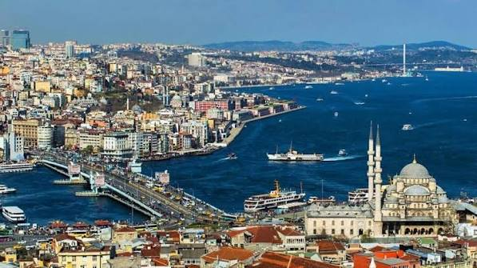
Gelişen Olayİstanbul gündeminden son gelişmeler
İstanbul'un ulaşım, yaşam, belediye, kültür ve ilçe gündemindeki gelişmeler İstanbul Haber Merkezi'nde.
Nem —%
Rüzgâr — km/s

Gelişen Olayİstanbul'un ulaşım, yaşam, belediye, kültür ve ilçe gündemindeki gelişmeler İstanbul Haber Merkezi'nde.
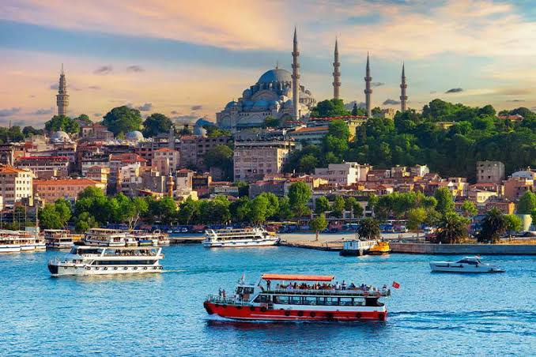
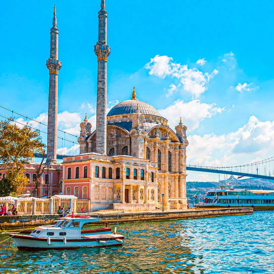
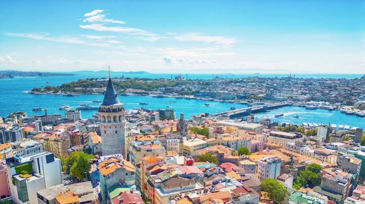
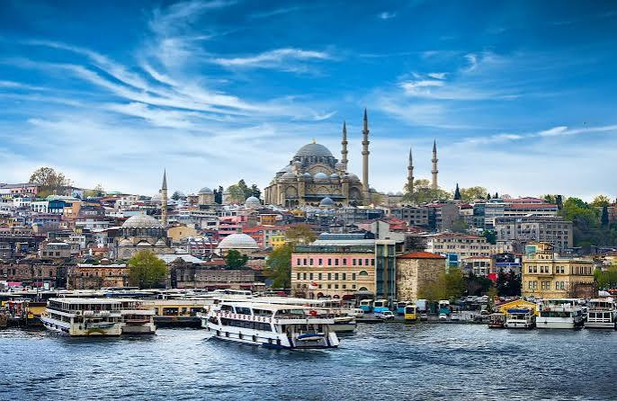
Bugün açık nöbetçi eczaneler yükleniyor...
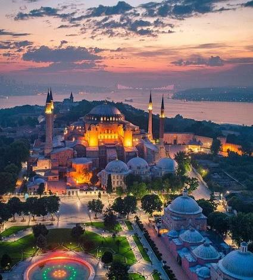
KADIKÖY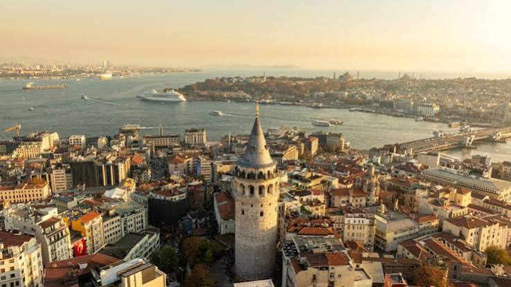
BEYOĞLU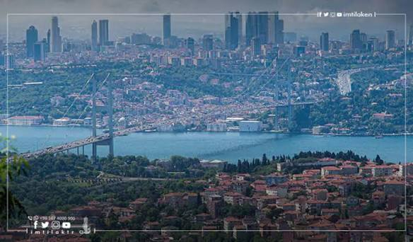
BEŞİKTAŞ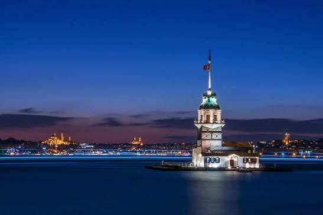
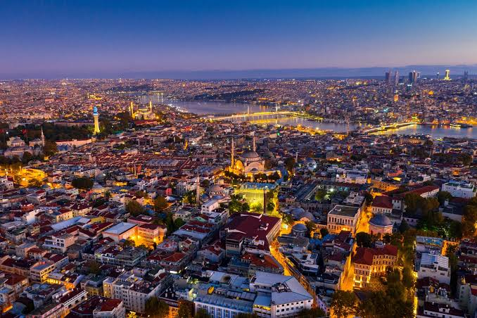
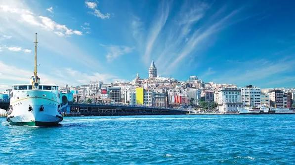
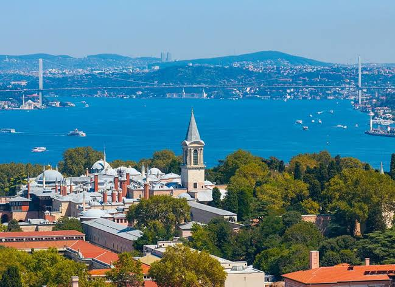
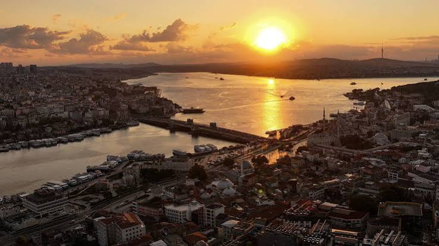
İstanbul'dan şehir manzaraları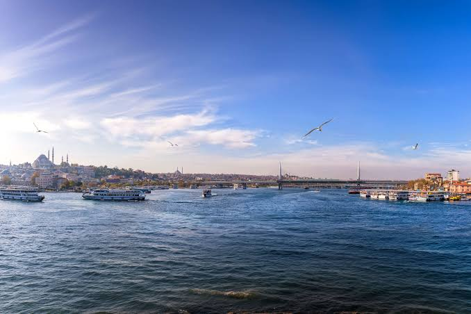
Boğazdan günün görüntüsüİstanbul gündeminden özel dosyalar
İlçeler, tarihi alanlar ve şehir yaşamı
İstanbul'un en güzel kareleri